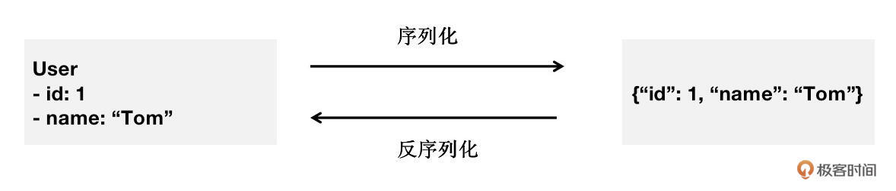

- 00 导读 解读OWASP Top10 2021.md.html
- 00 开篇词 从黑客的视角找漏洞，从安全的角度优雅coding.md.html
- 01 失效的访问控制：攻击者如何获取其他用户信息？.md.html
- 02 路径穿越：你的Web应用系统成了攻击者的资源管理器？.md.html
- 03 敏感数据泄露：攻击者如何获取用户账户？.md.html
- 04 权限不合理：攻击者进来就是root权限？.md.html
- 05 CSRF：为什么用户的操作他自己不承认？.md.html
- 06 加密失败：使用了加密算法也会被破解吗？.md.html
- 07 弱编码：程序之间的沟通语言安全吗？.md.html
- 08 数字证书：攻击者可以伪造证书吗？.md.html
- 09 密码算法问题：数学知识如何提高代码可靠性？.md.html
- 10 弱随机数生成器：攻击者如何预测随机数？.md.html
- 11 忘记加“盐”：加密结果强度不够吗？.md.html
- 12 注入（上）：SQL注入起手式.md.html
- 13 注入（下）：SQL注入技战法及相关安全实践.md.html
- 14 自动化注入神器（一）：sqlmap的设计思路解析.md.html
- 15 自动化注入神器（二）：sqlmap的设计架构解析.md.html
- 16 自动化注入神器（三）：sqlmap的核心实现拆解.md.html
- 17 自动化注入神器（四）：sqlmap的核心功能解析.md.html
- 19 失效的输入检测（上）：攻击者有哪些绕过方案？.md.html
- 20 失效的输入检测（下）：攻击者有哪些绕过方案？.md.html
- 21 XSS（上）：前端攻防的主战场.md.html
- 22 XSS（中）：跨站脚本攻击的危害性.md.html
- 23 XSS（下）：检测与防御方案解析.md.html
- 24 资源注入：攻击方式为什么会升级？.md.html
- 25 业务逻辑漏洞：好的开始是成功的一半.md.html
- 26 包含敏感信息的报错：将安全开发标准应用到项目中.md.html
- 27 用户账户安全：账户安全体系设计方案与实践.md.html
- 28 安全配置错误：安全问题不只是代码安全.md.html
- 29 Session与Cookie：账户体系的安全设计原理.md.html
- 30 HTTP Header安全标志：协议级别的安全支持.md.html
- 31 易受攻击和过时的组件：DevSecOps与依赖项安全检查.md.html
- 32 软件和数据完整性故障：SolarWinds事件的幕后⿊⼿.md.html
- 33 SSRF：穿越边界防护的利刃.md.html
- 34 Crawler VS Fuzzing：DAST与机器学习.md.html
- 35 自动化攻防：低代码驱动的渗透工具积累.md.html
- 36 智能攻防：构建个性化攻防平台.md.html
- 大咖助场 数字证书，困境与未来.md.html
- 春节策划（一） 视频课内容精选：Web渗透测试工具教学.md.html
- 春节策划（三） 一套测试题，看看对课程内容的掌握情况.md.html
- 春节策划（二） 给你推荐4本Web安全图书.md.html
- 结束语 无畏前行.md.html
- 捐赠
32 软件和数据完整性故障：SolarWinds事件的幕后⿊⼿
你好，我是王昊天。
在日常生活中，我们经常会用到一些应用软件，例如微信以及支付宝等，它们无疑给我们的生活带来了很大的便利。但是，你有没有想过这些应用软件会不会被人篡改呢？
现在让我们一起设想一个情况，假设你常用的某款应用被攻击者篡改过，并且该应用没有检测出代码被更改，导致你可以正常使用它并且察觉不到它已经被篡改了。那么，这款应用在运行时，就会执行攻击者写入的恶意代码，这会对我们的设备安全造成极大的破坏。
这一讲，我们一起来分析软件和数据完整性故障问题的原因和后果。
软件和数据完整性故障
我们可以将软件和数据完整性故障分为两个方向，即软件完整性故障及数据完整性故障。
其中，软件完整性故障代表应用的运行代码可能受到篡改，攻击者可以将恶意代码加入到应用程序中，使得应用程序运行时，恶意代码也被执行。
而数据完整性故障则代表应用发送的数据可能受到篡改，攻击者可以通过修改一些数据，实现欺骗其他用户乃至绕过访问控制。
到这里，你已经对软件和数据完整性故障有了大致的了解，接下来我们会进入到对它们的具体学习中，首先让我们来看软件的完整性故障。
软件的完整性故障
软件的完整性故障就是应用的运行代码可能受到了篡改，那么攻击者是如何对其进行更改的呢？
事实上，攻击者可以通过多种途径来修改应用代码。下面，让我们来看其中典型的三种攻击方式。
第一种方式最简单，当应用依赖于一些来源不可信的插件或模块时，攻击者就可以尝试对这些依赖项的代码进行修改，这样应用在引入依赖项时也会将恶意代码引入，从而导致软件完整性被破坏。
接下来，我们来看第二种攻击方式。为了让你更好地理解这种方式，我们先来学习一个概念即CI/CD管道，它是Continuous Integration以及Continuous Delivery的缩写，意为持续集成和持续部署。在上一讲中，我们学习了Devops理念，而CI/CD管道实际上就是实现这种理念的具体方法，它可以使得开发和运营团队能够在整个软件开发生命周期中进行协作，完成代码从构建到部署乃至最后的安全性检测这些阶段。
当应用的CI/CD管道安全性不充分时，攻击者就可以在CI/CD的过程中向应用代码插入恶意代码，如果这段代码可以绕过CI/CD阶段安全性的测试，那么这段恶意代码将会随着应用一起被部署、使用以及执行。
下面，我们来看最后一种攻击方式。这种攻击方式，利用的是我们熟悉的应用更新过程。如果一个应用在更新时，没有对其更新的内容进行完整性验证就将它添加到应用中，那么在这个过程中，就可能会存在恶意代码的添加。攻击者可以将自己准备的恶意更新包进行上传，供其他用户使用更新。当用户使用恶意更新包更新应用时，就会使得恶意代码加入到应用中。
值得一提的是，有的时候官方的更新包也可能存在恶意代码，在这种情况下，几乎可以使得所有用户受到恶意代码的攻击。著名的SolarWinds事件就是因为官方更新包中存在恶意代码所导致的。一般来讲，这种情况的发生都是由于应用开发内部存在内鬼。
到这里，你已经明白了软件完整性故障的攻击方式，接下来让我们一起来看一下刚刚提到的SolarWinds事件，它算是一个影响力极大的软件完整性故障实例。
软件的完整性故障实例
在2020年12月13日，FireEye发布了关于SolarWinds供应链攻击的报告，报告中指出SolarWinds Orion软件更新包中被黑客植入了后门。本次供应链攻击事件，波及范围极大，包括政府部门、关键基础设施以及多家全球500强企业，造成的影响目前无法估计。
不难发现，这次SolarWinds事件非常恶劣，那么它到底是如何实现的呢？攻击者是在版本2019.4-2020.2.1中植入了恶意的后门应用程序。这些恶意程序利用SolarWinds的数字证书绕过验证，伪装成正常的协议与攻击者进行通信并将结果隐藏在合法的插件配置文件中，从而达到隐藏自身的目的。
这就是著名的SolarWinds事件，从攻击者的行为、使用的技术以及足够的基础设施支撑来看，其攻击水平与技术成熟度无疑是国家背景的黑客组织。经过调查，白宫网格统一协调小组明确披露此次事件的幕后黑手就是俄罗斯情报部门，他们对此付出了极高的成本。
到这里，你已经完成了对软件完整性故障的学习，接下来让我们学习同样重要的数据完整性故障吧。
数据的完整性故障
数据的完整性故障就是应用发送的数据可能受到了篡改。
在学习数据的完整性故障前，我们首先需要学习两个概念，序列化及反序列化。通俗地说，序列化就是把一个对象变成可以传输的字符串，并让它可以以特定的格式在进程之间跨平台安全地进行通信。这么说可能会比较抽象，接下来我们一起看一个简单示例。

从上图中，我们可以看到，User是一个对象，它包含两个属性id以及name，我们想要传输数据就需要将它转化为JSON格式，这样才便于实现数据的传输，反序列化则是它的相反过程。
事实上，攻击者可以对序列化之后的数据进行修改，这样应用的数据完整性就会被破坏，如果没有数据的完整性验证，那么攻击者很可能成功伪造一些数据，而这会对应用的安全造成破坏。接下来，让我们一起看一个示例来加深我们对数据的完整性故障的理解。
数据的完整性故障示例
如下是一个登陆过程，我们需要在浏览器中输入自己的账号和密码，然后点击登陆，之后服务器收到登陆请求后会判断账号密码是否正确，如果正确就返回一个登陆成功的提示信息以及一个cookie，然后将这个cookie信息存储在浏览器中。
假设攻击者user1登录成功，并从浏览器存储中找到了自己的cookie，发现它是由数字123以及自己的用户名构成的，之后将这个cookie中的user1改为admin，尝试登陆管理员身份。此时，如果Web应用缺乏对数据完整性的校验，那么就会将攻击者当作管理员处理，使得攻击者成功实施自己的恶意登录行为。
那么到这里，你已经学习了什么是数据完整性故障，也知道了它的危险之处。下面让我们一起学习如何抵御软件和数据完整性故障吧！
如何抵御软件和数据完整性故障
我们可以根据软件和数据完整性故障产生的不同原因，针对性地执行防御措施。
为了防止用户下载被修改过的应用或者修改应用发送的数据，我们可以在应用中增加数字签名机制。这样，如果应用或数据被修改，那么就通过不了数字签名的验证，使得修改过的应用或数据无效。这虽然不能防止软件或数据被篡改，但是可以有效地使得攻击行为无效。
对于一些包管理工具，例如NPM、Maven，我们通常需要从其中下载一些内容来使用。所以，我们需要确保这些包管理工具是可信的，避免下载一些攻击者篡改过的工具，从而导致软件完整性故障。
为了防止CI/CD管道过程中出现有害软件完整性的问题，我们需要确保CI/CD管道具有适当的隔离配置以及访问控制，使得攻击者无法通过这个过程来修改应用的代码。
总结
在这一讲中，我们学习了软件和数据完整性故障问题。
首先，我们对什么是软件和数据完整性故障问题进行了了解，知道了软件完整性故障代表应用的运行代码可能受到篡改，攻击者可以将恶意代码加入到应用程序中，使得应用程序运行时，恶意代码也被执行。而数据完整性故障则代表应用发送的数据可能受到篡改，攻击者可以通过修改一些数据，实现欺骗其他用户乃至绕过访问控制。
在简单地了解完软件和数据完整性故障之后，我们对它们进行了具体的学习。
在对软件完整性问题的学习中，我们可以通过SolarWinds事件，清晰地知道软件完整性问题的实现方式以及后果的严重性。而对数据完整性问题的学习中，我们通过一个登录示例，具体了解了数据完整性是怎么一回事，以及可能会导致的后果。
最后，我们学习了软件和数据完整性故障的防御方案，从多个不同的攻击角度，针对性地给出了相应的解决方案。
思考题
你觉得软件和数据完整性故障问题的本质是什么？
欢迎在评论区留下你的思考。如果觉得今天的内容对你有所帮助的话，也欢迎你把课程分享给其他同事或朋友，我们共同学习进步！
© 2019 - 2023 Liangliang Lee. Powered by gin and hexo-theme-book.